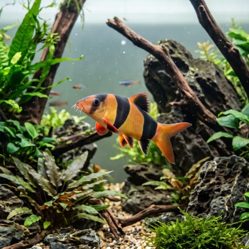

Nome popular principal
Bótia-Palhaço
Bótia-Palhaço, Botia Palhaço, Clown Loach
Ficha de peixe
Cobitídeos e Limpa-Fundos
Um peixe de fundo carismático e de cores vibrantes que encanta pelo hábito de nadar e descansar em grupo.

Nome popular principal
Bótia-Palhaço, Botia Palhaço, Clown Loach
Nome científico
Nome técnico essencial para taxonomia, cruzamento de manejo e referência editorial consistente.
Dificuldade de manejo
Use este nível como referência inicial, sempre considerando volume, estabilidade e compatibilidade do aquário.
Seção 1
Seção 2
Seções 4 a 6
Bótia-Palhaço tem hábito alimentar onívoro. Excelente. 1 a 2 vezes ao dia. Devora caramujos indesejados no aquário e aceita com entusiasmo rações afundantes, alimentos vivos e pequenos pedaços de vegetais.
Praticamente imperceptível; as pontas da nadadeira caudal dos machos tendem a ser levemente voltadas para dentro em forma de gancho. Tipo de reprodução: Ovíparo. Dificuldade de reprodução: Avançado. A reprodução em cativeiro doméstico é extremamente rara, ocorrendo quase exclusivamente em pisciculturas comerciais com estimulação hormonal.
Alta. Substrato recomendado: Areia fina ou cascalho rolado bem macio sem arestas pontiagudas. Necessidade de esconderijos: Alta. Aprecia aquários com troncos, pedras com cavernas e vegetação abundante, pois gosta de se esconder e repousar em frestas.
Seção 7
Cresce lentamente, mas pode atingir até 30 cm de comprimento e viver mais de 15 anos se mantida em aquários bem filtrados.
Seção 8
Sim, a Bótia-Palhaço é famosa por ser um controle natural eficiente contra pragas de caramujos em aquários plantados.
Esse é um comportamento normal de repouso da espécie; elas costumam deitar de lado ou de barriga para cima, o que costuma assustar iniciantes.
Por ser um peixe altamente gregário, recomenda-se manter um grupo mínimo de 5 indivíduos para evitar estresse e timidez extrema.